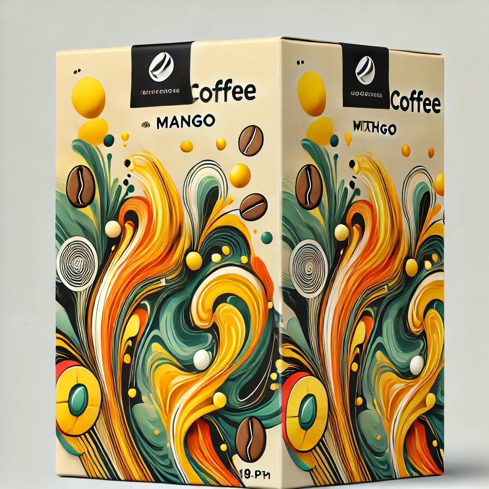
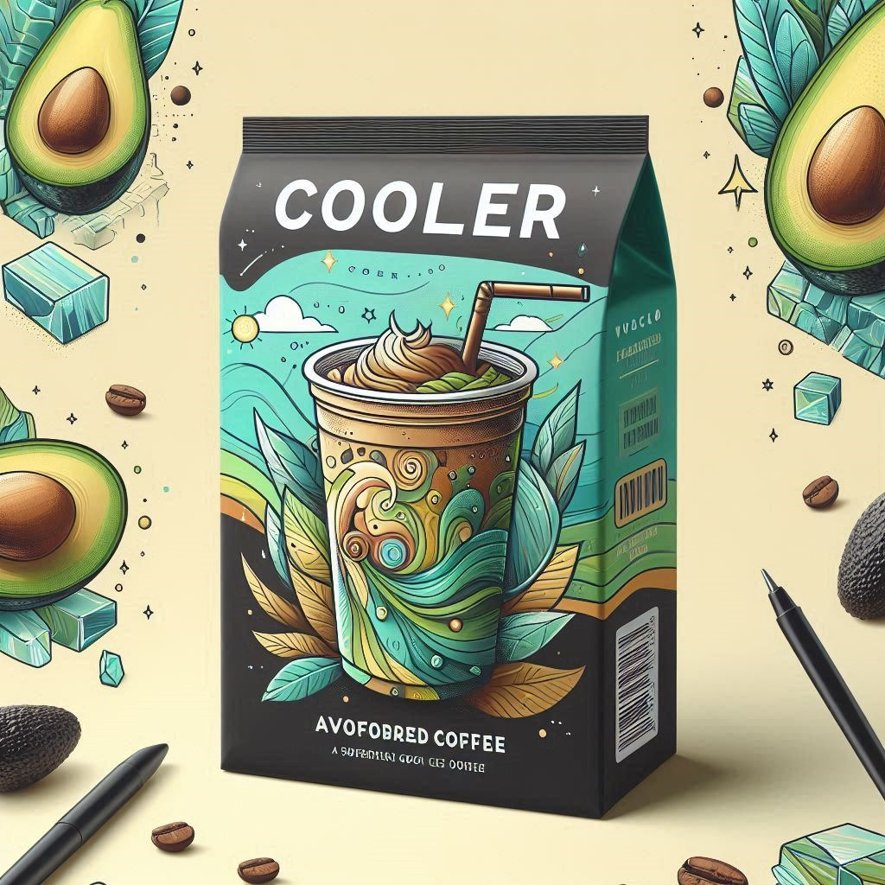
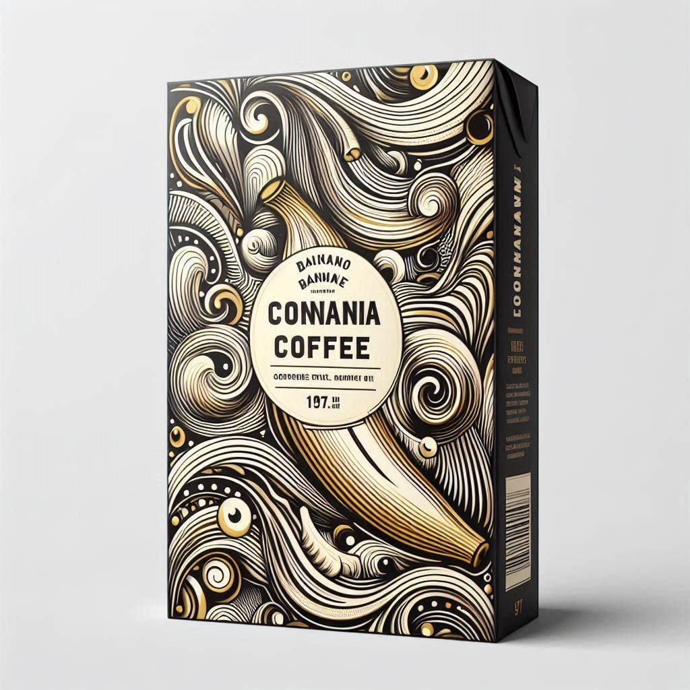

Tempat santai dengan rasa kopi terbaik di kota ini.
Tentang Kami
Santai Dimari adalah sebuah cafe yang berlokasi di Banjarbaru yang menyediakan
berbagai macam kopi
dengan rasa yang unik.
Menu

Mango Coffee
Minuman ini menawarkan pengalaman yang berbeda dari
kopi tradisional karena adanya perpaduan antara keasaman alami dan kemanisan buah mangga
dengan kekuatan dan kehangatan kopi.

Avocado Coffee
Kombinasi antara kopi yang kaya dan beraroma kuat dengan alpukat yang
creamy menghasilkan cita rasa yang halus dengan sensasi dingin menyegarkan.

Banana Coffee
Menggabungkan keaslian rasa kopi dengan aroma dan rasa
pisang yang khas, menciptakan kombinasi yang menarik bagi para pecinta kopi yang ingin
mencoba sesuatu yang berbeda dari kopi biasa.